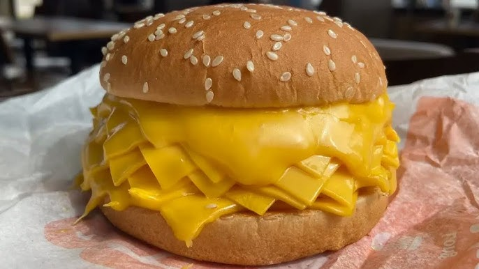

Odin Recipes
Return
Cheeseburger Recipe

Description:
This burger isn't for the faint of heart. 15 layers of cheese with ketchup and mustard, all between two warm sesame buns. Putting the CHEESE in Cheeseburger.
Ingredients
- 15 - Slices of Cheese (Any kind)
- Ketchup and Mustard to taste.
- 1 - Sesame Burger Bun.
Steps:
- Slice your bun in half.
- Toast both halves of the bun.
- Pile all 15 slices of cheese onto the bottom bun.
- Squeeze Ketchup and Mustard on the top bun to taste.
- Put the top bun on the cheese, and serve.